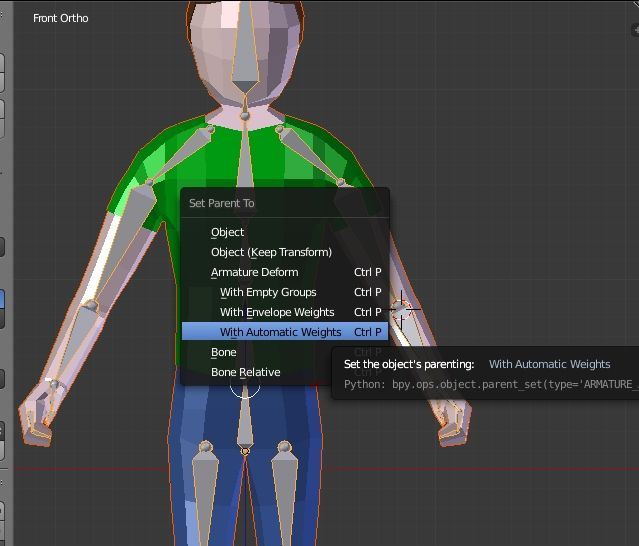

Blender:Rigging
Objecte Fundamental de Rigging:
L'objecte fundamental d'aquesta tècnica, és l'os.

Resum de la tècnica:
Primer determines com vols que el teu model es mogui.
Un cop saps això, començes creant un os en una part central del objecte.
A continuació, comences a fer "extrudes"(en edit mode fer clic a la punta d'un os i apretes la tecla e) com si estiguessis creant un esquelet del objecte en qüestió.
És important tenir en compte que les puntes i arrels dels ossos han de estar a les atriculacions que vuldras mòure del objecte.
Un cop fet aquest pas, has de començar a vincular els ossos amb les diferens ectremitats del objecte.
Finalment, nomès queda animar l'objecte de la forma que havies envisonat

A continuació hi ha un video que explica tot el proces i la posicio exacte dels botons que has de apretar per utilitzar aquesta tècnica.